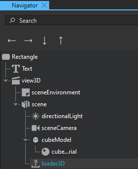
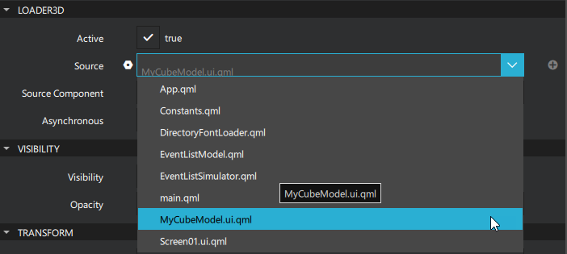
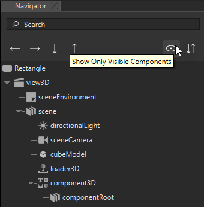
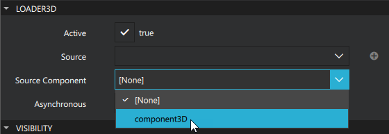
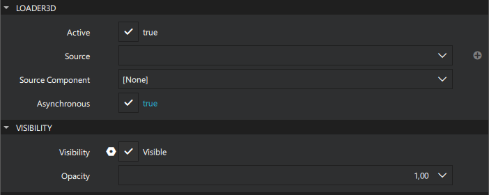
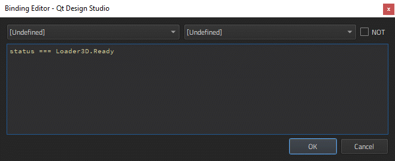

Loader3D
Note: The Loader3D component is released as a tech preview feature in Qt Design Studio 2.2, and its functionality will be improved in future releases.
Loader3D is a loader component used to dynamically load 3D components. It can load a QML file using the Source property or a component using the Source component property. Loader3D is useful for delaying the creation of a component until it is required, for example, when a component should be created on demand or when a component should not be created unnecessarily for performance reasons.
For more information, see the Loader3D QML type in the Qt Quick 3D documentation.
Loader3D Properties
Active
The Active property is set to true by default, which makes the Loader3D currently active. Setting Active to false makes Loader3D inactive. If you change the Source or Source component of an inactive Loader3D, the component will not be instantiated until Loader3D is made active. Setting Loader3D inactive will also cause any item loaded by the loader to be released, but this will not affect the files or components defined as Source or Source component.
Source
The Source property defines the URL of the 3D component to instantiate. To unload the currently loaded object, set this property to an empty string or set the Source component to undefined. Setting Source to a new URL will also cause the item created by the previous URL to be unloaded.
Source Component
The Source Component property defines the component for Loader3D to instantiate. Currently, you need to define the Source component in the Code view.
Asynchronous
The Asynchronous property defines whether the component will be instantiated asynchronously. This property is set to false by default. When used in conjunction with the source property, loading and compilation will be performed in a background thread. Loading asynchronously creates the objects declared by the component across multiple frames and reduces the likelihood of glitches in animation. Setting the value of Asynchronous to false while an asynchronous load is in progress will force immediate synchronous completion. This allows an asynchronous loading to begin and then forces completion if the Loader3D content must be accessed before the asynchronous loading is completed.
Setting the Loader3D to Load a QML File
To add a Loader3D component and set it to load a QML file:
- From Components, drag a Loader3D component to scene in the Navigator or 3D view.
- In Navigator, select loader3D.

- In Properties, select Source and select a QML file.

Setting the Loader3D to Load a Component3D Component
To add a Loader3D component and set it to load a Component3D component:
- From Components, drag a Loader3D Component to scene in the Navigator or 3D view.
- From Components, drag a Component3D component to scene in Navigator.
- In Navigator, select the filter icon and clear Show Only Visible Components. This makes the Component3D component visible in Navigator.

- In Navigator, select loader3D.
- In Properties, select Source Component and select component3D.

Setting the Visibility of Loading Components
To avoid seeing the components loading progressively, set the Visibility property for Loader3D appropriately in Binding Editor:
- In Properties > Loader3D, select the Asynchronous check box.

- In Visibility, select
 to open the actions menu, and then select Set Binding.
to open the actions menu, and then select Set Binding. - Type
status === Loader3D.Readyinto Binding Editor.
- Select OK.